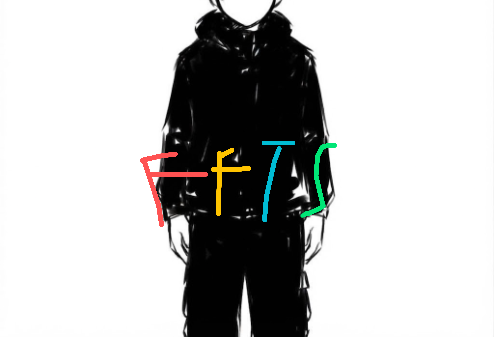
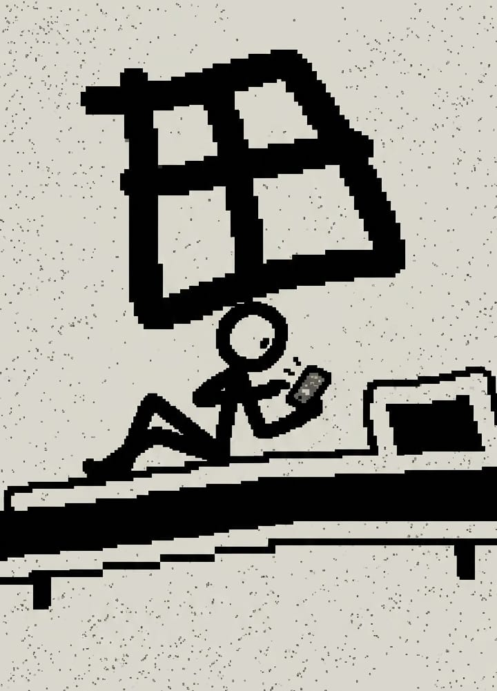
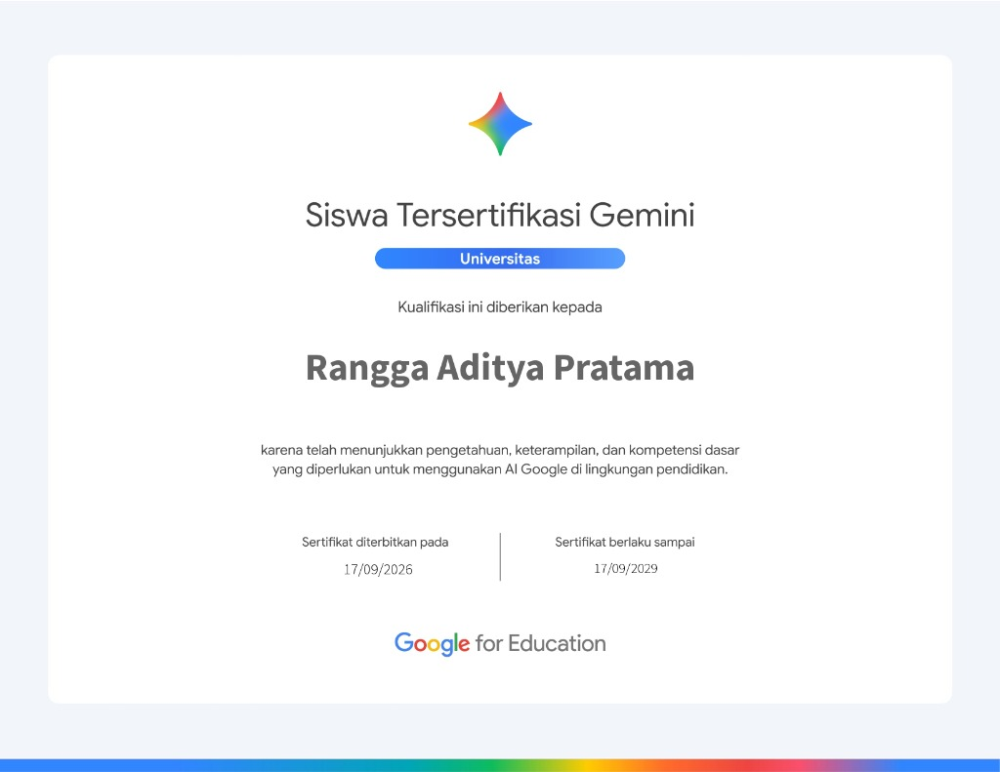

01 — About
I lead before I code. Every project starts with a team, a role for myself in it, and a reason the game needs to exist — the technical work follows from there.
Growing up in Blora, Central Java, my journey into game development has always been driven by a desire to build experiences that go beyond mere entertainment. I'm used to wearing many hats—directing a team through production while writing code, drawing pixel art, and shaping the story myself whenever a project needs it. I'm deeply drawn to games that hold something real — a fear worth sitting with, a system worth questioning — rather than ones that only exist to pass the time.
UNESA
Information Systems
Mastahpies
Team Production
Solo
Dirty Screen
02 — Skills
Capabilities & Craft
Python
Core gameplay systems, tooling, and backend logic.
GDScript / Godot
Player mechanics, gameplay systems, and AI behavior.
Game Design
Mechanics design, pacing, and choice architecture.
03 — Work
Two games, two ways of leading a project

1000 × 1250 pxcuplikan gim, rasio 4:5
Forest: Forget the Soul
with Mastahpies
A 2D top-down horror game built with my team, Mastahpies, set in a forest that gives up very little at a time. I led the project as lead programmer, and stepped into pixel art and scriptwriting wherever the team needed another hand.
- Role
- Lead Programmer
- Also contributed
- Pixel Art, Story & Script

1000 × 1250 pxcuplikan gim, rasio 4:5
Dirty Screen
Solo project
An educational narrative game following Raka, a 15-year-old growing up in an environment that treats pornography as unremarkable. The story tracks a slow arc — first exposure, gradual habit, and the toll on his friendships and schoolwork — with outcomes that shift with the player's choices.
The project is built around social systems, recommendation algorithms, and cultural normalization as the real forces at work, rather than a villain to blame — closer to how the situation plays out for a teenager in practice.
- Role
- Solo Developer
- Scope
- Design, Writing, Systems
04 — Certificates
Validated knowledge & continuous learning

Sertifikat Resmi Google for EducationGemini Certified University Student
Google for Education
Officially certified by Google for Education, demonstrating foundational mastery of generative AI concepts, prompt engineering, and the effective application of Google Gemini’s core capabilities within higher education.
Validates competency in utilizing AI-driven tools responsibly to accelerate academic research, enhance learning workflows, and strengthen creative problem-solving.
- Credential ID
- 194303999
- Validity Period
- Sep 2026 – Sep 2029